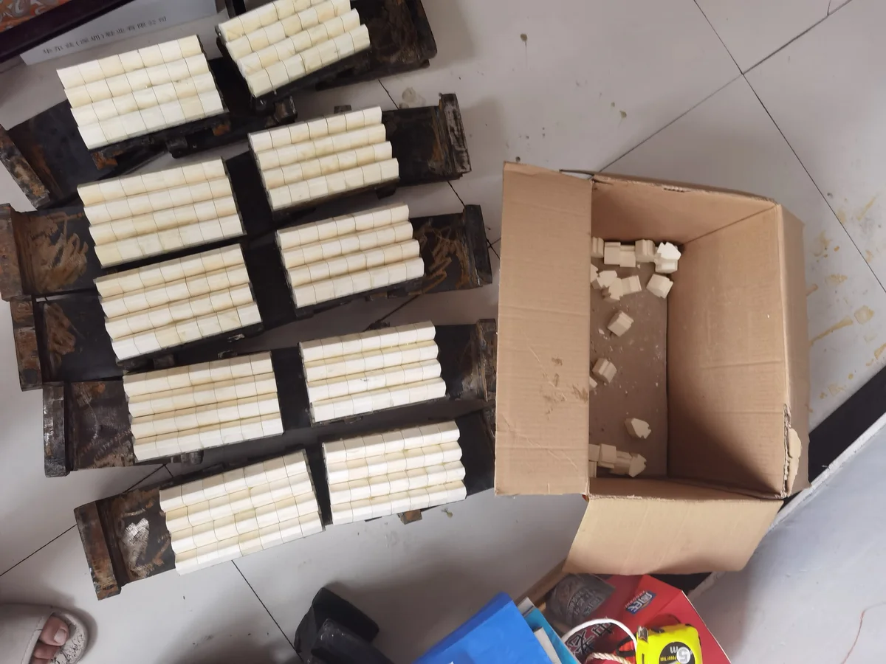

用于极端磨损条件的碳化钨镶块和TiC增强复合材料元件。WC-Co镶块达到HRA 86-90，适用于最磨蚀性的破碎和研磨应用。
极端硬度用于HPGR辊钉和VSI转子抛料头；纯磨粒磨损下寿命比Cr26高5-10倍；安装需注意防止热冲击...
Mn18基体中嵌入TiC陶瓷颗粒；磨蚀工况下耐磨寿命提升2-3倍；适用于硬岩圆锥破碎...
用于专业采矿应用的多晶金刚石（PCD）元件。PCD提供可用的最高硬度和耐磨性，用于地质钻探和极端磨损切削工具。
极端硬度用于HPGR辊钉和VSI转子抛料头；纯磨粒磨损下寿命比Cr26高5-10倍；安装需注意防止热冲击...
矿物分级机环和段。TiC增强Mn18Cr2基体在磨蚀性煤炭和矿物分级应用中比常规锰钢寿命长2-3倍。
Mn18基体中嵌入TiC陶瓷颗粒；磨蚀工况下耐磨寿命提升2-3倍；适用于硬岩圆锥破碎...
极端硬度用于HPGR辊钉和VSI转子抛料头；纯磨粒磨损下寿命比Cr26高5-10倍；安装需注意防止热冲击...
| 型号 | C | Si | Mn | Cr | TiC | Mo |
|---|---|---|---|---|---|---|
| Mn18Cr2+TiC | 1.05-1.35 | ≤1.0 | 16.0-19.0 | 1.5-2.5 | 8-15 vol% | — |
Mn18基体中嵌入TiC陶瓷颗粒；磨蚀工况下耐磨寿命提升2-3倍；适用于硬岩圆锥破碎
| 型号 | WC | Co | Other |
|---|---|---|---|
| WC-Co Cemented Carbide | 84-89% | 11-16% | ≤1% |
极端硬度用于HPGR辊钉和VSI转子抛料头；纯磨粒磨损下寿命比Cr26高5-10倍；安装需注意防止热冲击